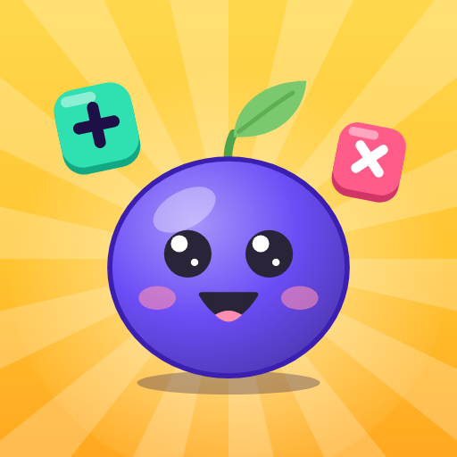

Last updated 8 November 2026
The short version: Onkoo is a number puzzle game. Every puzzle is generated and checked on your phone, the whole game works in airplane mode, and nothing about you reaches the developer — there is no Onkoo account, no server and no analytics.
Three Google services are built in, and this page describes each exactly: rewarded ads from Google AdMob, which only play when you tap to watch one but whose SDK starts when the app opens (unless you own Onkoo Plus); Google Play Games, for the weekly league and cloud save, if you are signed in; and Google Play Billing, if you buy Onkoo Plus or coins. What they receive goes to Google, not to the developer.
বাংলায় সংক্ষেপে: অংক-এর সব ধাঁধা আপনার ফোনেই তৈরি হয় ও মেলানো হয়, ইন্টারনেট ছাড়াই খেলা যায়, আর আপনার কোনো তথ্য ডেভেলপারের কাছে আসে না — অংক-এর নিজস্ব অ্যাকাউন্ট, সার্ভার বা অ্যানালিটিক্স নেই। বিজ্ঞাপন শুধু পুরস্কারের ভিডিও, আপনি নিজে চাপলে তবেই চলে; তবে অংক প্লাস না থাকলে অ্যাপ খোলার সময়ই Google AdMob চালু হয় এবং আপনার বিজ্ঞাপন আইডি, ডিভাইসের তথ্য ও IP থেকে পাওয়া আনুমানিক অবস্থান ব্যবহার করতে পারে। Google Play Games-এ সাইন ইন থাকলে আপনার এক্সপি লিগের লিডারবোর্ডে যায় আর অগ্রগতির একটি কপি আপনার গুগল অ্যাকাউন্টে সেভ হয় (সেটিংসে ক্লাউড সেভ বন্ধ করা যায়)। অংক প্লাস ও কয়েন কেনা হয় Google Play-এর মাধ্যমে। নিচের ইংরেজি অংশটিই পূর্ণ নীতি।
These are the same answers given on the app's Google Play Data safety declaration.
| Data collected by the developer | None — there is no developer server |
|---|---|
| Your puzzles, answers and progress | Kept on the phone. Copied to your own Google account only by Play Games cloud save, which you can switch off |
| Accounts or sign-in | No Onkoo account. Optional Google Play Games sign-in, for the league and cloud save |
| Advertising | Yes — Google AdMob rewarded ads only, played when you tap to watch one. None for Onkoo Plus owners |
| Data collected for advertising | Advertising ID, app set ID, device information, approximate location from IP, app and ad interactions, and SDK diagnostics — by Google AdMob |
| Shared through Google Play Games | Your XP on two leaderboards and, with cloud save on, your saved game — only if you sign in |
| Analytics, telemetry or crash reporting | None in the app (see §9 for Google's bundled components) |
| In-app purchases | Onkoo Plus (one-time) and three coin packs, through Google Play Billing |
| Notifications | An optional daily reminder, scheduled on the phone. No push server |
| Location, contacts, camera, microphone or photos | Never accessed |
| Works in airplane mode | Yes — every puzzle, the journey, badges and settings. Ads, the league, cloud save and purchases need a connection |
| Android Auto Backup | Off (allowBackup="false") |
Nothing. There is no server behind Onkoo and no Onkoo account. The developer never receives:
All 21 puzzle types and all 14 chapters are generated and checked on the phone. The developer sees only aggregate figures that Google reports to every app publisher — ad earnings in AdMob and install and sales totals in the Play Console — never anything about an individual person.
Your game is saved in the app's private storage (a key-value file under the
app's private files/mmkv directory, id onkoo, which the
Android sandbox makes unreadable to every other app):
| What is saved | Detail |
|---|---|
| Progress | Journey position and stars, XP, coins, streak freezes, personal bests, puzzles played per game and difficulty, the daily set, chests, badges and their counters, outfits |
| Days played | Which days you played (for the streak and badges) and XP per week (for the league) |
| Skill summary | Points per skill, used to draw the brain-score chart on the Me screen |
| Settings | Language (English or বাংলা), theme, sound, vibration, reduce motion, the daily reminder time, and the Cloud save switch |
| Introduction answers | What brings you to Onkoo, how many minutes a day, and your starting level — used only to set up the game |
| Onkoo Plus | Whether you own Plus and Google Play's purchase token for it. Ownership is re-checked with Google Play on every launch, never trusted from the file alone |
| Ad limit | How many coin ads you have watched today (three a day at most) |
None of this is sent to the developer. With Play Games cloud save on, the same object is also copied to your own Google account (§4).
Onkoo shows rewarded ads only from Google AdMob — a short video that plays only when you tap a button offering one:
There are no banners, no pop-up (interstitial) ads and no ads when the app opens, and an ad never starts by itself during a puzzle. Onkoo Plus owners are never shown an ad, and from the first launch after buying Plus the ads SDK is not started at all. Ads are limited to Google's "PG" content rating.
Where the law requires it — for example in the European Economic Area, the United Kingdom and Switzerland — Google's consent form asks for your choice before any ad is requested. You can change it later from Settings › Ad privacy choices, which appears wherever the form applies.
For players without Plus, the Google Mobile Ads SDK starts when the app opens (after consent, where required) and loads one ad in the background so it is ready if you choose to watch. This happens whether or not you ever watch an ad. To select, serve and measure ads and to prevent fraud, Google may collect:
This goes to Google, encrypted in transit, not to the developer. How Google uses it: How Google uses information from sites or apps that use its services and the Google Privacy Policy.
Ad requests carry no data from inside the game. Your puzzles, answers, progress, XP, coins, settings and Play Games identity are never attached to them.
The Google Mobile Ads SDK declares the Android Privacy Sandbox permissions —
ACCESS_ADSERVICES_AD_ID, ACCESS_ADSERVICES_ATTRIBUTION and
ACCESS_ADSERVICES_TOPICS — on every app that includes it. They are
listed in §8 with everything else.
Play Games is optional; every puzzle works without it. If you have a Play Games profile, Google Play Games may sign you in automatically when Onkoo opens, and the League tab and the Cloud save card offer a sign-in button. While you are signed in:
Play Games data is held by Google under the Google Privacy Policy; the developer has no access to it beyond the public leaderboards every player sees. You can delete it, including Onkoo's saved game and scores, from your Play Games profile or your Google Account.
Onkoo Plus (a one-time purchase: harder levels, free hints, no ads, extra themes) and three coin packs are sold through Google Play Billing. Google handles the payment and your payment details; the app never sees them. The app receives the purchase result and a purchase token, uses them to unlock Plus or add coins, and asks Google Play on each launch whether you own Plus. Prices are shown as Google Play reports them, in your currency. Google's handling of purchases is described in the Google Privacy Policy and the Google Payments Privacy Notice.
If you turn on the daily reminder (in the introduction or in Settings), the app schedules a notification on the phone for the time you pick, optionally skipping days you have already played. Scheduling happens entirely on the device: there is no push server and no notification token is created or sent anywhere. On Android 13 and later the app asks for permission to post notifications at that moment, and only then. Turn it off in Settings › Daily reminder or in Android's notification settings.
The released build declares exactly these permissions (checked with
aapt2 dump permissions on the packaged release). Only one of them —
notifications — is a runtime permission the app can ask for, and it asks only
when you turn the reminder on.
| Permission | Comes from | Why it is there |
|---|---|---|
INTERNET | The app | Rewarded ads, Play Games, Play Billing and the Play review card. The puzzles never use the network |
ACCESS_NETWORK_STATE | Google Mobile Ads library | Lets the Google libraries check whether a connection exists |
WAKE_LOCK | Google Mobile Ads library | Keeps the device awake while an ad video plays |
com.google.android.gms.permission.AD_ID | Google Mobile Ads SDK | Lets AdMob read the advertising ID (§3) |
ACCESS_ADSERVICES_AD_ID, ACCESS_ADSERVICES_ATTRIBUTION, ACCESS_ADSERVICES_TOPICS | Google Mobile Ads SDK | Android Privacy Sandbox APIs for ads (§3) |
com.android.vending.BILLING | Google Play Billing | Onkoo Plus and coin packs |
POST_NOTIFICATIONS | The notification library (Notifee) | The optional daily reminder. Asked only when you turn it on |
ACCESS_NOTIFICATION_POLICY | The notification library (Notifee) | Declared by the library for Do Not Disturb features. Onkoo never reads or changes Do Not Disturb |
BROADCAST_CLOSE_SYSTEM_DIALOGS (Android 11 and earlier only) | The notification library (Notifee) | Declared by the library for notification buttons. Onkoo's reminder has none |
FOREGROUND_SERVICE | AndroidX WorkManager, used by the Google and notification libraries | Declared by the library for long background tasks. Onkoo itself starts no foreground service |
VIBRATE | The haptics library | Gentle taps on answers. Off when you turn vibration off in Settings |
The release build also carries
com.skrchowdhury.onkoo.DYNAMIC_RECEIVER_NOT_EXPORTED_PERMISSION, a
signature-level entry generated by an Android system library so the app's
internal receivers are not exposed to other apps. It grants access to
nothing. There is no location, camera, microphone, contacts,
storage, phone or exact-alarm permission — the exact-alarm permission the
notification library adds is removed from the build, because the reminder uses
an ordinary scheduled alarm.
Onkoo works fully offline. It uses the network only for the three Google services above: AdMob (when the app opens, for players without Plus, and when you watch an ad), Play Games (while signed in), and Play Billing (to check Plus on launch and to complete a purchase). There is no developer server to reach.
The app is built with React Native and bundles open-source libraries for drawing, animation, gestures, sound effects (generated on the phone; nothing is recorded), haptics, local storage and local notifications, plus Google's Mobile Ads and User Messaging Platform (consent) SDKs, Play Games Services v2, Play Billing and Play In-App Review. There is no analytics SDK, attribution SDK, crash reporter, ad mediation partner or social-media SDK.
Two details, for completeness:
Google Play may also collect crash and performance reports (Android vitals) if you have allowed your phone to share usage and diagnostics. That is a Google Play feature, outside the app.
Off. The app sets android:allowBackup="false", so Android does not
copy its data to Google Drive or to a new phone. Moving your progress between
phones is what Play Games cloud save (§4) is for, and it is under your control.
| To… | Do this |
|---|---|
| Delete your progress on this phone | Settings › Reset progress, or uninstall the app. With cloud save on, the reset is synced to the cloud copy too, and an older cloud copy can't bring the old progress back |
| Remove everything the app saved on the phone | Settings › Apps › Onkoo › Storage › Clear data, or uninstall |
| Stop cloud uploads | Settings › Cloud save off |
| Delete the cloud copy and leaderboard scores | Your Play Games profile or Google Account |
| Change ad consent | Settings › Ad privacy choices, where shown |
| Reset or delete the advertising ID | Phone Settings › Google › Ads |
| Stop reminders | Settings › Daily reminder, or Android's notification settings |
Purchase receipts are kept by Google Play under your Google account. There is no deletion request to send the developer, because the developer holds no copy of any data — except an email you chose to send, which is deleted on request.
On the phone, the app's data is protected by the Android app sandbox. Everything sent to Google — ads, Play Games and Play Billing — goes over encrypted connections, and Google may process it in countries other than yours under its own privacy policy. The strongest protection is structural: there is no developer server holding anyone's data, so there is nothing of the developer's to breach.
Onkoo is a puzzle game for adults, published on Google Play with a target audience of 18 and over. It is not directed at children, and it is not part of Google Play's Families programme — for young children, the developer publishes a separate app, Onkoo Kids, which collects nothing and shows no ads. If you believe a child has used Onkoo and want data removed, use the steps in §11 or write to the address below.
Data-protection laws such as the GDPR give you rights of access, correction, export and erasure over personal data a service holds about you. The developer holds none. Your game is on your phone, where you can erase it at any time; the cloud copy, scores and advertising data are held by Google, which honours those rights through your Google Account and the controls in §11.
Any revision will be posted on this page with a new date at the top. If Onkoo ever began collecting something new, this page would say so before the version that did it shipped.
| Date | Change |
|---|---|
| 8 November 2026 | First published for version 1.0.0. |
Questions about this policy or the app: emailofs2o@gmail.com